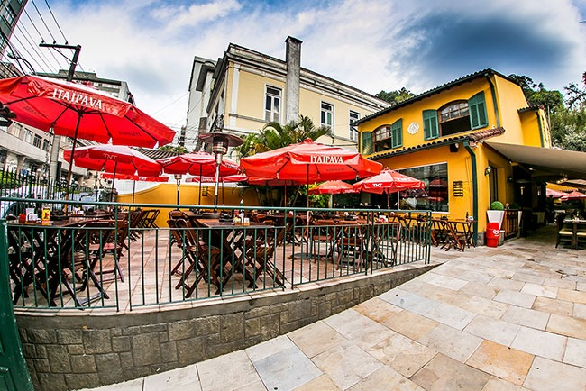
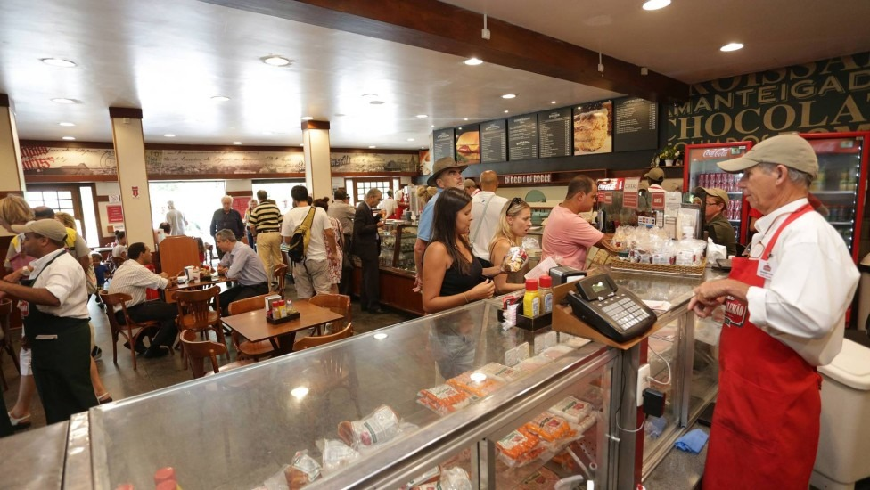
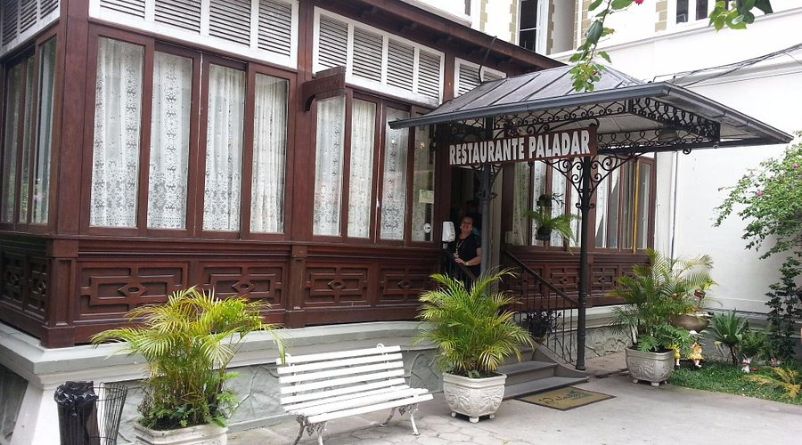

Gastronomia em Petrópolis
Descubra os sabores da Cidade Imperial

Restaurante Imperial
Culinária brasileira com toques contemporâneos em ambiente sofisticado.
Especialidades: Filé Wellington, Bacalhau Imperial
Horário: Terça a Domingo, 12h às 23h
Mais informações
Casa do Alemão
Comida alemã autêntica com cervejas artesanais e ambiente acolhedor.
Especialidades: Eisbein, Salsichas artesanais, Chucrute
Horário: Quarta a Domingo, 11h às 22h
Mais informações
Paladar
Restaurante com culinária internacional e vista panorâmica da cidade.
Especialidades: Risotos, Carnes nobres, Massas frescas
Horário: Diariamente, 12h às 00h
Mais informações